1.2 成形：把草图变成立体
草图只是画在一个平面上的线，没有厚度，拿不起来。要变成真正的立体零件，得让草图“长出厚度”。Fusion 里有好几种长法：往上拔高（拉伸）、绕轴转一圈（旋转）、沿路径走一遍（扫掠）、在几个截面之间过渡（放样）。这一页每种方法一张卡片：做之前什么样、怎么做、做完什么样。
这些命令在哪#
“造形状”的命令都在「实体」选项卡的「创建」组里。点「创建 ▾」会展开完整的菜单：
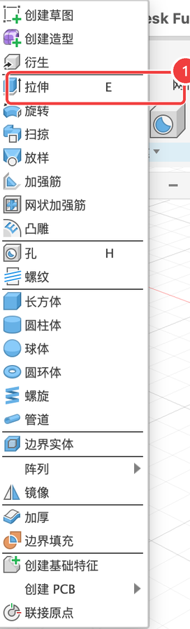
菜单很长，但不用一次学完。这一页讲最常用的 4 个：
| 命令 | 一句话 | 像什么 |
|---|---|---|
| 拉伸 | 把平面轮廓往一个方向拔高 | 挤牙膏：管口是什么形状，挤出来的就是什么截面 |
| 旋转 | 把截面绕一根轴转一圈 | 陶艺转盘：只要画出半边的轮廓 |
| 扫掠 | 让截面沿着一条路径走一遍 | 挤奶油裱花：截面是裱花嘴，路径是手走的线 |
| 放样 | 在两个或多个不同的截面之间平滑过渡 | “天圆地方”：底下是方的，上面是圆的 |
菜单里的其他命令：孔、螺纹、阵列、镜像在 1.3 修改 讲；长方体、圆柱体这类“基本体”不用画草图就能直接放，加强筋、凸雕、螺旋、管道等在第 5 章讲。
拉伸（Extrude）#
一句话：把草图里的一块封闭区域往一个方向拔高，让它有厚度。
常用来做：板子、盒子、凸台；把「操作」改成「剪切」，还能打孔、开槽、刻字。拉伸是 Fusion 里用得最多的命令，没有之一。


跟着做一遍#
- 点「实体」选项卡 →「创建」组里的「拉伸」按钮。也可以直接按 E。
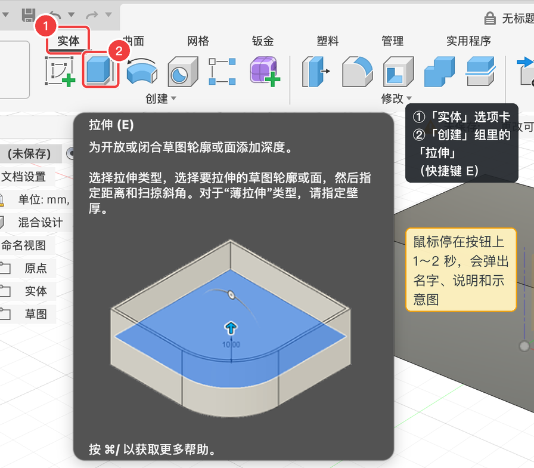
- 点草图里浅蓝色的区域（这叫“轮廓”）。右侧对话框的「轮廓」会显示“1 已选定”，画布上出现一个蓝色箭头和一个小输入框。
- 在小输入框里输入
20，或者直接用鼠标拖蓝色箭头。灰色半透明的方块是预览。
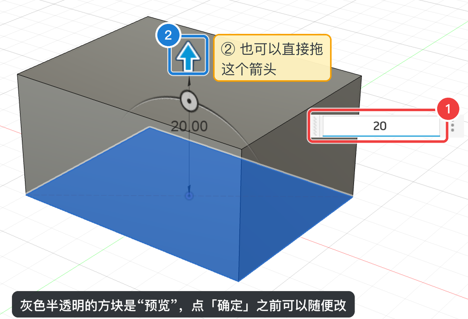
- 点对话框右下角的「确定」（或按 return）。
做对了吗？画布上出现一个实心的方块；左侧浏览器里多了一个「实体」文件夹；底部时间轴上多了一个拉伸图标。草图会被自动隐藏，它还在，只是不显示了。
拉伸对话框逐项说明#
按 E 之后，画布右侧会出现这个对话框。下表的编号对应图上的蓝色编号：
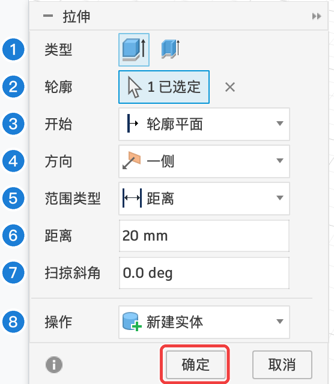
| 编号 | 选项 | 含义（大白话） | 本例 | 什么时候改 |
|---|---|---|---|---|
| 1 | 类型 | 两个图标。左边是普通拉伸，整块区域都长出来；右边是薄拉伸，只沿着轮廓的边长出一圈薄墙，中间是空的 | 普通拉伸 | 想一步做出框、筒、没有底的壳时用薄拉伸 |
| 2 | 轮廓 | 要拉伸的对象：草图里的封闭区域，也可以直接点零件上的一个平面。按住 ⇧ 可以多选，点右边的 × 清空 | 矩形区域 | 一次拉伸好几块区域时多选 |
| 3 | 开始 | 从哪里开始长：轮廓平面（草图所在的平面）/ 偏移（离开草图一段距离再开始）/ 对象（从另一个面开始） | 轮廓平面 | 想让形状“悬空”开始，或者从某个面开始长 |
| 4 | 方向 | 一侧（只往一边长）/ 两侧（两边各长一段，距离可以不同）/ 对称（两边长得一样，草图正好在中间） | 一侧 | 想让零件关于草图平面对称时选「对称」 |
| 5 | 范围类型 | 长到哪里为止：距离（填一个数）/ 目标对象（长到某个面、平面或点为止，那个面移动了它也跟着变）/ 全部（一直穿过所有实体，没有距离框） | 距离 | 打穿整个零件的孔用「全部」；“正好长到某个面”用「目标对象」 |
| 6 | 距离 | 长多少。可以填负数，表示往反方向长。后面学了参数，这里还能填参数名 | 20 mm | — |
| 7 | 扫掠斜角 | 侧壁一边长一边倾斜的角度。0 就是直上直下；正数往外张，负数往里收（实测） | 0 deg | 做模具、做容易脱模的零件时 |
| 8 | 操作 | 长出来的东西怎么和已有的实体相处：合并 / 剪切 / 相交 / 新建实体 / 新建零部件（见下面的第 2 个实验） | 新建实体 | 加凸台用合并，挖槽打孔用剪切 |
| 确定 / 取消 | 确定才会真正生成；取消就什么都不留 | 确定 | — |
四个下拉框展开是这样的：
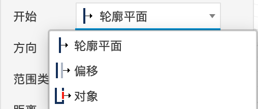
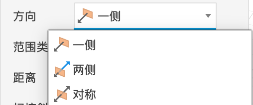
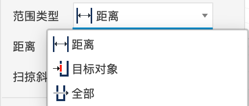
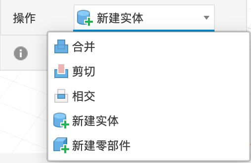
🧪 实验 1：拉伸选项实验台#
🧪 实验 2：「操作」选项#
「操作」管的是：新长出来的形状和已经存在的实体是什么关系。只有一个物体时看不出区别，所以这里用两个：一个方块，加一个和它部分重叠的圆。
旋转（Revolve）#
一句话：画出物体一半的截面，让它绕一根轴转一圈。
常用来做：杯子、瓶子、碗、旋钮、轮子、轴……凡是“在车床上能车出来”、横着切开是圆形的东西。
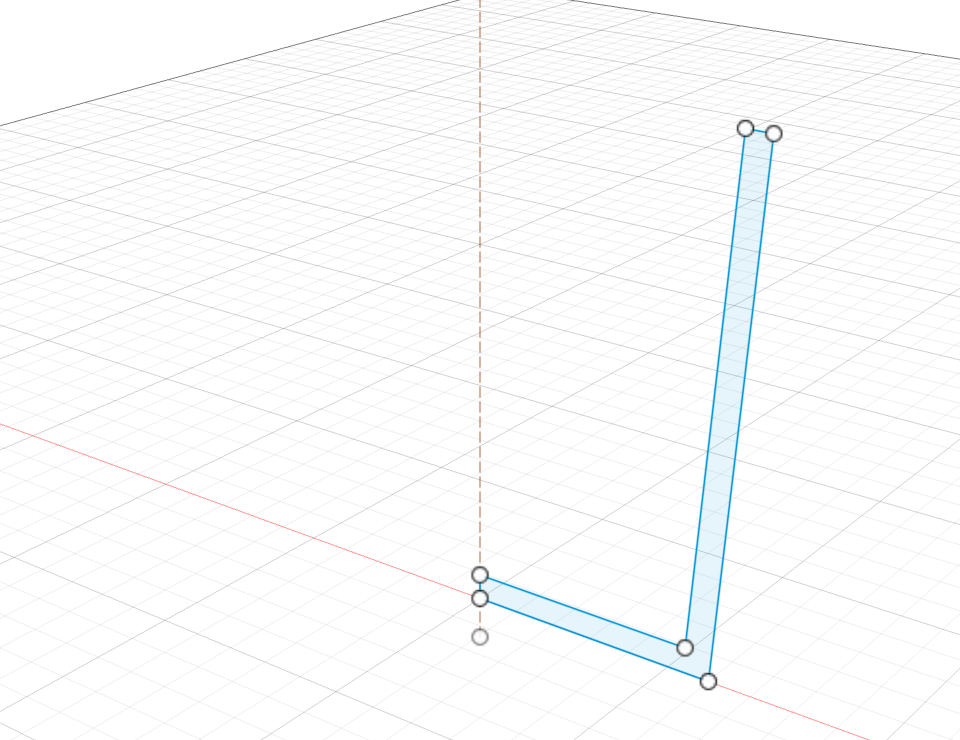
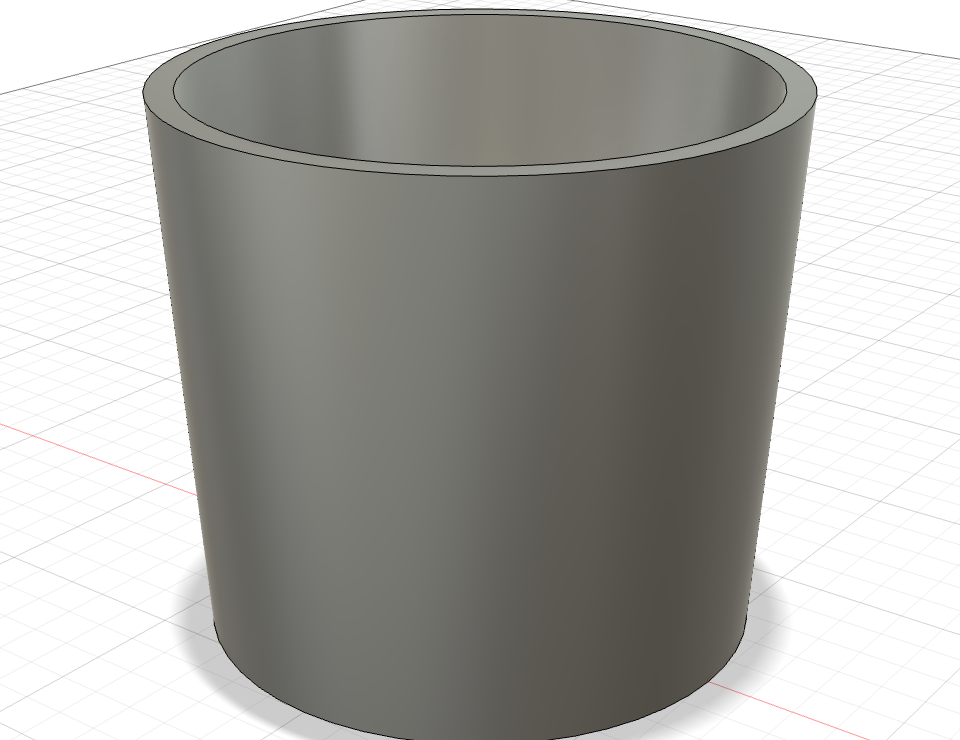
- 在一个竖直平面（比如 XZ 平面）上画草图：半个截面 + 一条中心线（画一条直线，用「线型」变成构造线）。
- 「创建 → 旋转」。
- 「轮廓」选截面（浅蓝色区域），「轴」选那条中心线。也可以选坐标轴或零件的直边。
- 角度保持 360 deg，点「确定」。
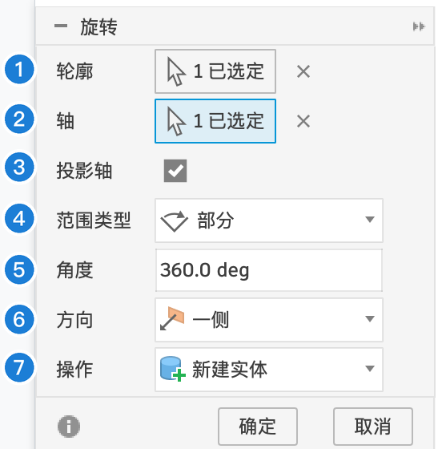
| 编号 | 选项 | 含义 | 什么时候改 |
|---|---|---|---|
| 1 | 轮廓 | 要转的截面 | — |
| 2 | 轴 | 绕哪根线转 | — |
| 3 | 投影轴 | 轴不在草图平面上时，先把它投影到草图平面再转 | 一般保持勾选 |
| 4 | 范围类型 | 部分（转一个角度）/ 目标对象（转到某个面为止）/ 完全（整整一圈） | 只要半个、四分之一时用「部分」 |
| 5 | 角度 | 转多少度。360 就是一整圈 | 做扇形、半个球时 |
| 6 | 方向 | 一侧 / 两侧 / 对称，和拉伸一样 | — |
| 7 | 操作 | 合并 / 剪切 / 相交 / 新建实体 / 新建零部件，和拉伸一样 | 在零件上车出一圈凹槽用「剪切」 |
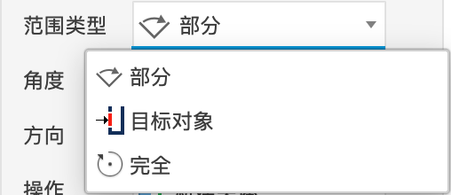
案例 P5 的旋钮就是用旋转做的。
扫掠（Sweep）#
一句话：让一个截面沿着一条路径走一遍，走过的地方就成了实体。
常用来做：弯管、把手、绳子、线槽、弹簧（配合螺旋路径）。
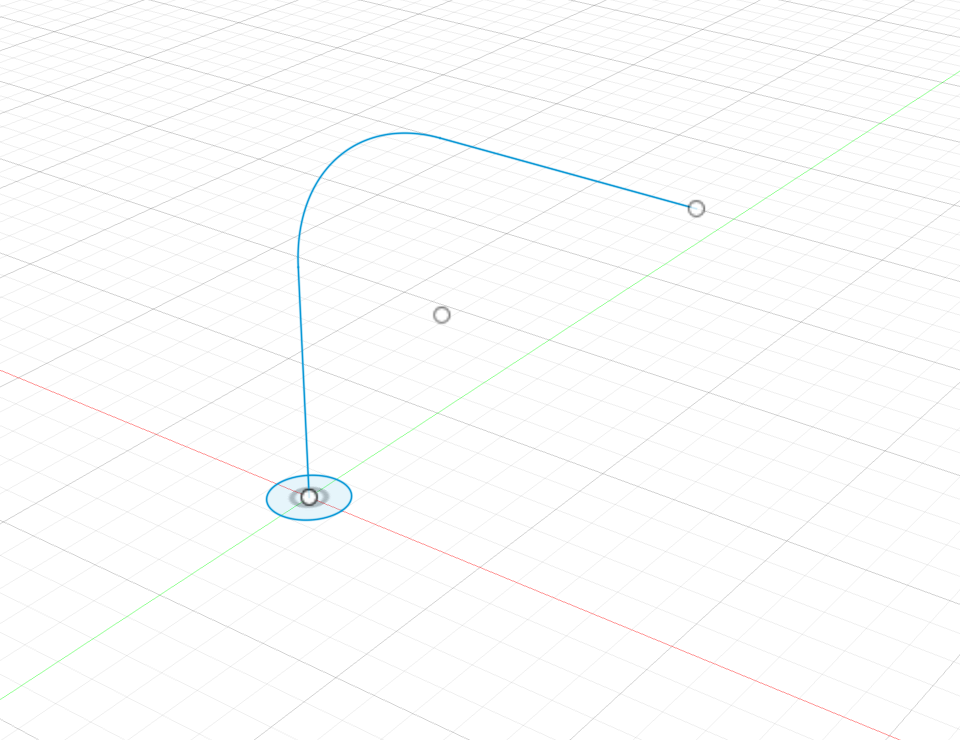
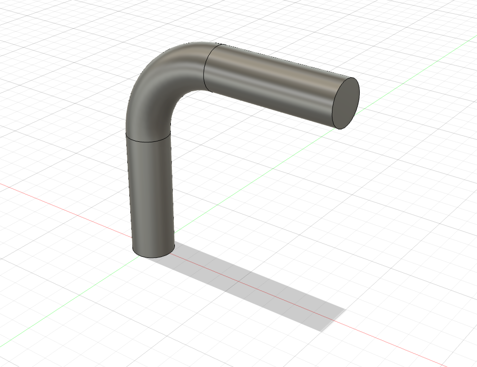
扫掠要两张草图：
- 路径：截面要走的线。可以是直线、圆弧、样条曲线连起来的一条，必须首尾相连、不能断开。
- 截面（轮廓）：一个封闭的形状，画在和路径垂直的平面上，最好正好在路径的起点。就像吸管的切口和吸管垂直一样。
- 先画路径草图。再画截面草图：本例路径的起点是一段竖线，和地面垂直，所以截面直接画在地面（XY 平面）上、圆心对准路径起点就行。如果起点处没有现成的、和路径垂直的平面，就用「构造 → 沿路径的平面」在起点建一个（1.4）。
- 「创建 → 扫掠」。
- 「轮廓」选小圆，点「路径」后面的选择按钮，再点画布上的路径线。
- 点「确定」。
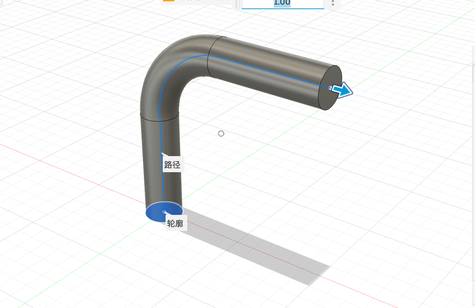
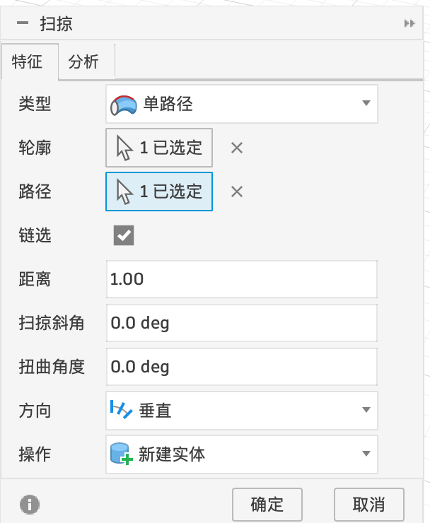
| 选项 | 含义 | 什么时候改 |
|---|---|---|
| 特征 / 分析 | 两个页签。「分析」里可以检查路径曲率，排查扫掠失败 | 失败时看看 |
| 类型 | 单路径 / 路径 + 引导轨道（多一条线控制截面的大小变化）/ 路径 + 引导曲面（截面贴着一个曲面转向）/ 实体扫掠（拿一个实体沿路径走，比如模拟刀具切出的槽） | 截面要沿路逐渐变粗变细时用引导轨道 |
| 轮廓 | 截面 | — |
| 路径 | 要走的线 | — |
| 链选 | 点一段路径时自动把首尾相连的整条选上 | 保持勾选 |
| 距离 | 走到路径的哪里为止，1.00 就是走完全程（0.5 就是走一半） | — |
| 扫掠斜角 | 一边走一边逐渐变粗或变细 | — |
| 扭曲角度 | 一边走一边转，走完全程转多少度（麻花、螺旋纹） | — |
| 方向 | 截面在拐弯时怎么转向：垂直（始终和路径垂直，最常用）/ 平行（始终保持原来的朝向） | 一般保持「垂直」 |
| 操作 | 和拉伸一样 | 挖一条弯曲的槽用「剪切」 |
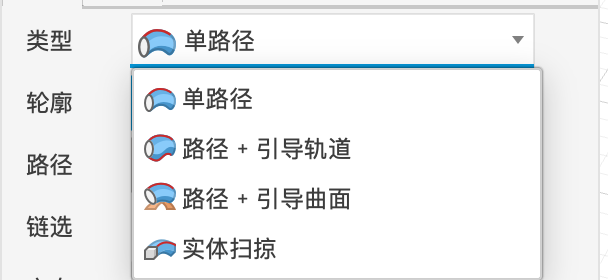
放样（Loft）#
一句话：给两个或更多不同形状的截面，Fusion 在它们之间“铺”出一个平滑过渡的实体。
常用来做：从方到圆的过渡接头、瓶身、船体、刀柄……截面形状一路在变化的东西。
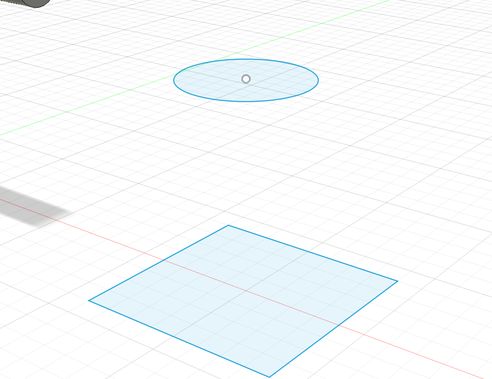
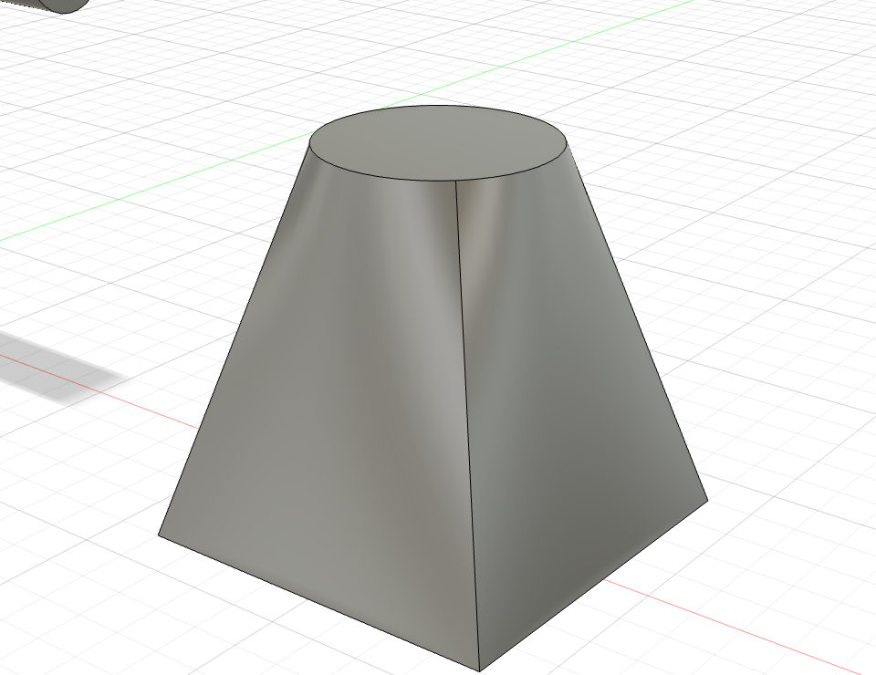
- 在不同高度画好各个截面（上面那个圆要先建一个偏移 40 mm 的构造平面，再在上面画）。
- 「创建 → 放样」。
- 按顺序依次点每个截面：先点方形，再点圆形。
- 点「确定」。
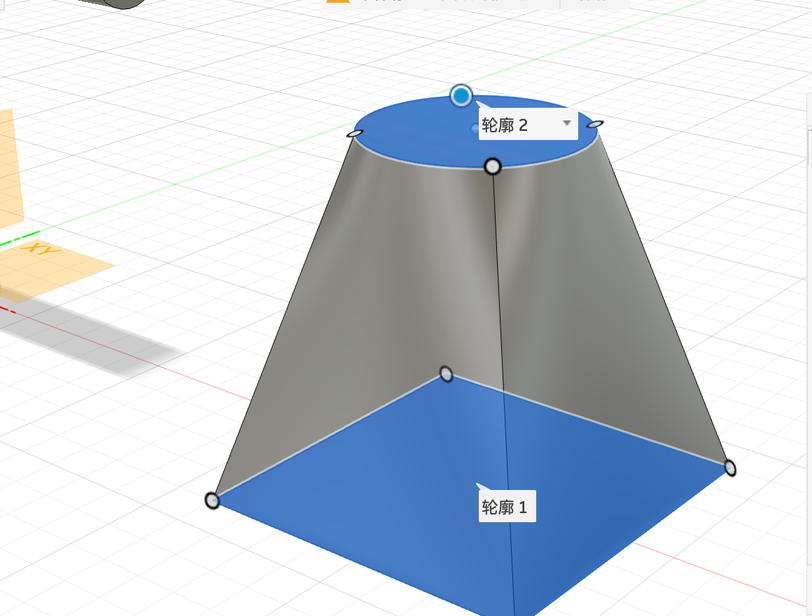
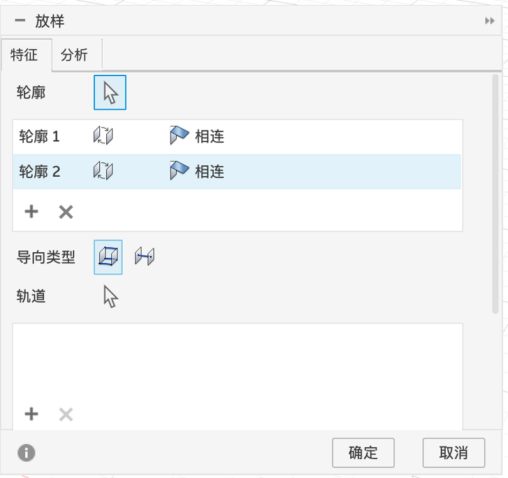
| 选项 | 含义 |
|---|---|
| 轮廓 | 截面列表，按点选的顺序排列。每一行后面的「相连」可以改成相切等条件，控制两头是怎么“出发”的 |
| + / × | 添加 / 删除截面；拖动可以调整顺序 |
| 导向类型 | 两个图标：轨道（用额外的线约束侧面轮廓）/ 中心线（用一条线约束整体走向） |
| 轨道 | 引导侧面形状的线，不选也行，Fusion 会自动生成最平滑的过渡 |
| 操作 | 和拉伸一样（下面被挡住了，对话框可以往下滚动） |
四种成形方法怎么选#
| 形状特点 | 用 |
|---|---|
| 截面一路不变，直着长 | 拉伸 |
| 横着切开是圆（绕轴对称） | 旋转 |
| 截面不变，但沿着一条弯路走 | 扫掠 |
| 截面形状一路在变 | 放样 |
「创建」菜单里的其他命令（加强筋、凸雕、螺旋、管道、边界实体、加厚等）在第 5 章讲。